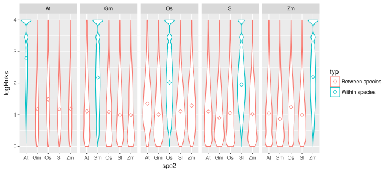
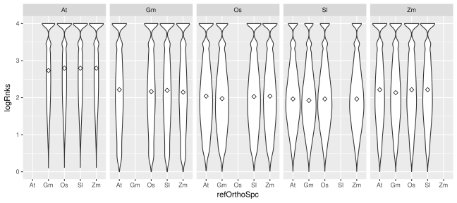
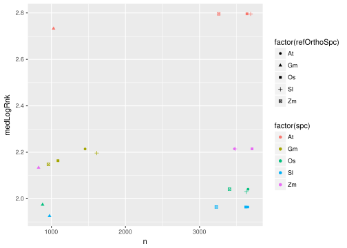

Within species comparison
Aim of the analysis
Compare sub-sets of samples from the same species to quantify the effect of the sample selection alone.
Random sample splitting
For each species the samples are split into two sub-sets by randomly selecting half of the studies. This ensures that for each of the sub-set pairs, the two halves do not share any samples from the same study (such as biological replicates). Note that the number of samples in each sub-set will not be the same. Splitting was repeated 10 times to generate 10 sub-set pairs (later refered to as reps or sample sub-sets). The plot below gives an overview of the sample were split into sub-set pairs:
Gene selection
To reduce the computational cost, only a subset (n=4000) of the genes were included. Genes with 1:1 orthologs to several species are prioritized and if that is not enough (as is the case for Gm and Zm) then also include 2:1 orthologs.
Reference “ortholog” selection
When comparing within species there are no orthologs and any gene can be used as a reference “ortholog”. To make the comparison more similar to that of the between species we use the 1:1 orthologs to each of the other species as reference orthologs. Ranks are calculated once for each set of 1:1 orthologs against the other species. In later plots “refOrthoSpc” refer to the different sets of orthologs.
results
The plot below shows the distribution of the resulting ranks for all within-species subsets (10reps x 4reforthos x 2dir x 4000genes) together with the ranks from the between species tests. Median is marked with diamond. Ranks are shown in -log10(P) scale (i.e. a value >1 corresponds P<0.1 and a value >2 corresponds P<0.01 etc.). As expected the within-species ranks are higher than between species.

compare randomized subsets
compare ref.orthos


rank stability
Do the same genes tend to have same ranks regardless of choice of sample subset? The plot below shows the correlation between the ranks in the subset replicates. There is a clear tendency to correlate even though it varies between the replicates, so in general there seems to be certain genes that tend to have higher ranks than others. This is expected as there are several gene specific properties that can affects its likelihood to get a high rank. Example of properties that are necessary to achieve a stable high rank:
- Many co-expressed genes
- Expressed in many conditions
- Large range of expression across samples.
There seems to be very little effect of ref.orthos and while there is differences between the species, it is far less than the variation between replicates.